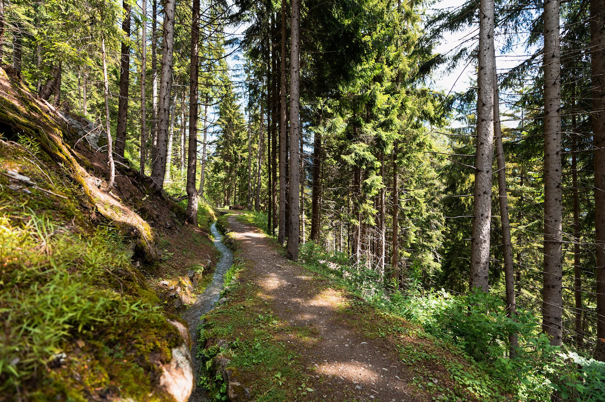

Le bisse de bruson
Cette balade en boucle à travers prairies fleuries et forêts de mélèze, de faible difficulté, prend son départ au restaurant
Raclett'House à Bruson, à environ 1000 mètres d’altitude. Après une première montée,
l’itinéraire chemine en pente douce le long du bisse des Ravines,
mis en eau au début du XIXème siècle, puis abandonné depuis 1942 avant d’être réhabilité en octobre 2013.
Au niveau de sa prise d’eau, à 1300 mètres d’altitude, une jolie cascade s’élance sous le regard d’un l
oup sculpté dans le bois, alors que le trajet de retour permet de découvrir les granges typiques
du village de Bruson.
Ce parcours pourra être emprunté idéalement pour une balade familiale durant l’été, le bisse
étant en eau de mi-mai à mi-octobre
